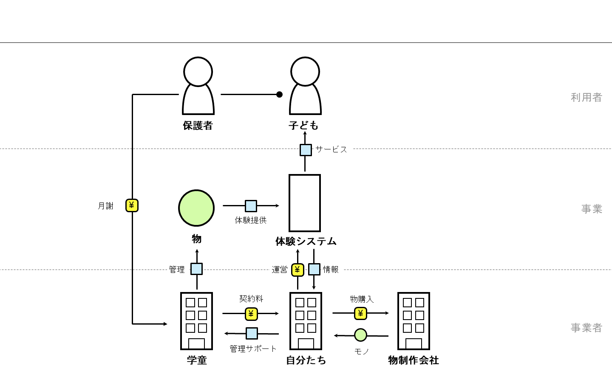
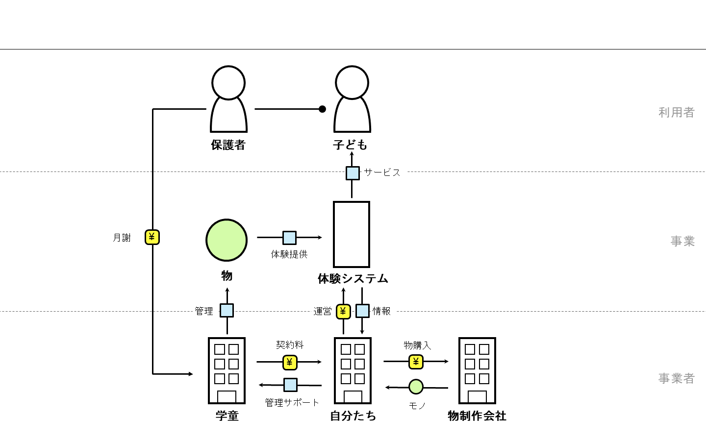

2回目グループワーク

そんな親たちは本当であれば塾や習い事に通わせたいが、施設の職員が教員免許などを持っているわけではないためそれが叶わないのである。
逆に子供達も学童の中でできることは限られており、退屈に毎日を過ごす子も少なくない。
そのため私たちは、学童児が自ら学びを得ることができるシステムを施設に提供し、子供たちの退屈をなくし親の希望に応えている。
同社のサービスは上述したことだけでなく施設運営への手助けにもなる。
学童では年々増える児童とは対象に施設員の数が足りず、全ての児童の面倒を見る手が足りなくなってしまっている。
そこで我々のシステムを導入すれば、自主学習をする児童の様子を見守るだけで仕事が済むため幾らか係員の仕事も楽になるだろう。

学童の運営元に子供たちへの新たな体験を提供する
年々共働きの両親が増加していることを背景に、子供を学童に預ける親も増加傾向にあり毎年最高人数を記録している。そんな親たちは本当であれば塾や習い事に通わせたいが、施設の職員が教員免許などを持っているわけではないためそれが叶わないのである。
逆に子供達も学童の中でできることは限られており、退屈に毎日を過ごす子も少なくない。
そのため私たちは、学童児が自ら学びを得ることができるシステムを施設に提供し、子供たちの退屈をなくし親の希望に応えている。
同社のサービスは上述したことだけでなく施設運営への手助けにもなる。
学童では年々増える児童とは対象に施設員の数が足りず、全ての児童の面倒を見る手が足りなくなってしまっている。
そこで我々のシステムを導入すれば、自主学習をする児童の様子を見守るだけで仕事が済むため幾らか係員の仕事も楽になるだろう。